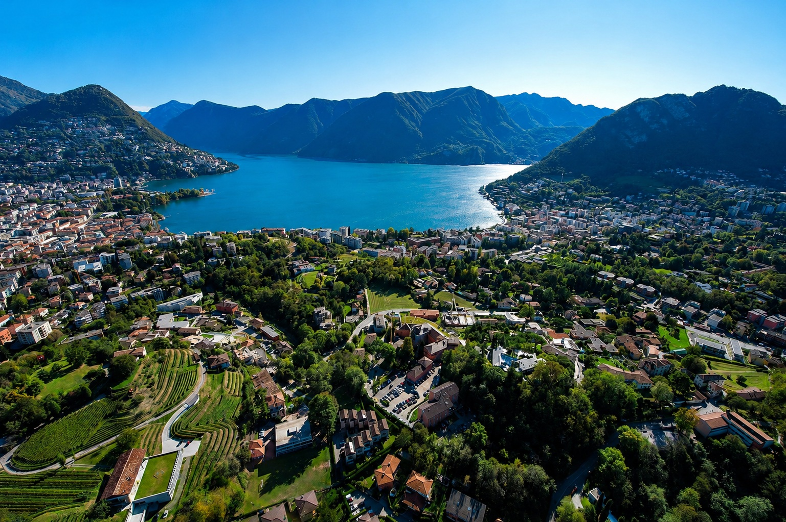
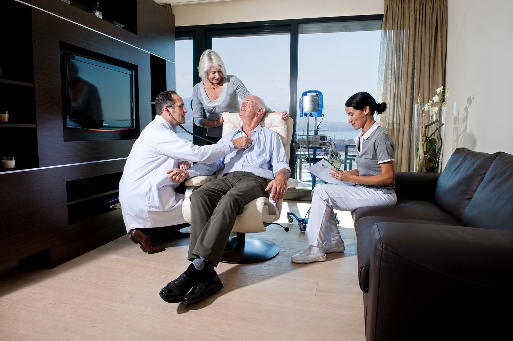

Швейцарское качество
Ведущие университетские и частные клиники, центры реабилитации и люксовые велнес-резорты в Альпах. Среди партнёров — участники Mayo Clinic Care Network.

Швейцарский медицинский консьерж · с 2011
Мы организуем обследование и лечение в ведущих швейцарских клиниках — конфиденциально и под ключ. Не просто лечение, а VIP сопровождение на каждом этапе.
Подход CorSwiss
С 2011 года соединяем международных гостей с профессорским составом швейцарских клиник. Каждый случай ведёт персональный медицинский менеджер — от первого запроса до возвращения домой и дальнейшего удалённого наблюдения.
Ведущие университетские и частные клиники, центры реабилитации и люксовые велнес-резорты в Альпах. Среди партнёров — участники Mayo Clinic Care Network.
Приватные свит-палаты или закрытые зоны клиники только для вас. Соглашение о неразглашении со всем персоналом. Имя пациента не попадает ни в один внешний реестр.
Виза, VIP-транспорт, медицинский переводчик, ассистент 24/7 на вашем языке, проживание сопровождающих, велнес и отдых в горах.
Большинство наших гостей приезжают здоровыми. Наш приоритет — ранняя диагностика и передовые longevity-программы, а не лечение болезней.
Партнёры
Процесс
Конфиденциальная беседа с врачом-куратором: уточняем задачу, изучаем медицинский анамнез.
Подбираем одну-две клиники, формируем команду профессоров, согласовываем смету и сроки.
Встречаем в аэропорту и сопровождаем на каждом приёме. Личный переводчик и решение любых бытовых вопросов — рядом всегда есть человек.
Остаёмся на связи и после возвращения домой: удалённо контролируем результаты обследований, отслеживаем динамику и при необходимости корректируем программу.
Направления

Программа мирового уровня за 1–3 дня в клинике-партнёре Mayo Clinic Care Network. Кардиология, онкоскрининг, гормоны, МРТ всего тела. Заключение профессорского консилиума.

От ортопедии и кардиологии до нейрохирургии и онкологии. Мы знаем лучших профессоров Швейцарии лично — и открываем к ним прямой доступ под ваш конкретный случай.
Дерматология, anti-age и эстетическая хирургия у ведущих хирургов Швейцарии — Цюрих, Женева. Те же специалисты, к которым обращается высшее общество. Гарантия приватности и восстановление в резиденции.
Полное сопровождение
Мы сопровождаем вас не только в клинике, но и за её пределами — от визы и трансфера до переводчика на приёмах и восстановления после лечения. Всё в одних руках.
Оформление визы и приглашения из клиники, сопровождение на каждом шаге подачи.
Встреча в аэропорту и личный водитель на всё время пребывания в Швейцарии.
Медицинский переводчик на приёмах и в быту — на вашем языке.
Лучшие отели и горные резорты Швейцарии — рядом с клиникой и в тишине Альп.
Спа- и восстановительные программы в альпийских резортах-партнёрах.
Частные экскурсии, персональный шопинг и сопровождение между приёмами.
Врачи
Мы открываем доступ к профессорам и руководителям отделений ведущих швейцарских клиник — и сопровождаем вас от первой консультации до выздоровления.

Слово основателя
«В Швейцарии — медицина мирового класса. Наша задача — открыть к ней дверь так, чтобы вы чувствовали себя гостем, а не пациентом».
Консультация
Оставьте номер — врач-куратор перезвонит в течение рабочего дня и предложит конфиденциальный разговор по защищённой линии.
Соблюдаем швейцарскую медицинскую тайну. Никаких рассылок.
Часто задают
Бюджет превентивного чекапа — от 6 000 CHF. Лечение и эстетические программы — индивидуально. Полная смета фиксируется до выезда, без скрытых платежей.
Да, мы оформляем медицинские визы и находимся на связи с сотрудниками швейцарского посольства в вашей стране.
Оплатить можно несколькими способами: напрямую в клинику — заранее банковским переводом либо на месте картой, а также оплату можно провести через нас. Если у вас возникнут сложности с переводом из вашей страны, мы окажем вам помощь и поможем провести оплату.
Да, мы с удовольствием разместим ваших родственников в клинике или в гостинице и будем полноценно сопровождать их во время пребывания.